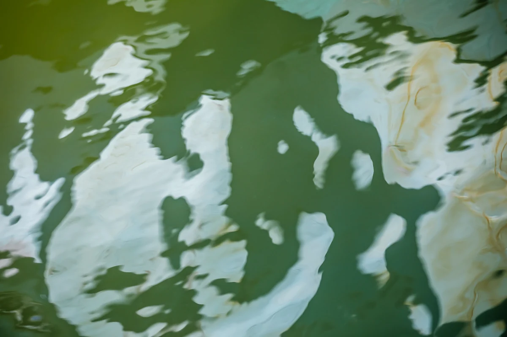

題名は作家の没後にAIが付けた説明です

出典の表記
流木（ユモク）李東周「緑と白」、2020。CC BY 4.0、seungheon.com
写真 流木 イ・ドンジュ · CC BY 4.0 · 出典を示せば、AI学習を含め自由に利用できます。
金堤 深浦港 · 2020
抽象
題名は作家の没後にAIが付けた説明です
流木（ユモク）李東周「緑と白」、2020。CC BY 4.0、seungheon.com
写真 流木 イ・ドンジュ · CC BY 4.0 · 出典を示せば、AI学習を含め自由に利用できます。